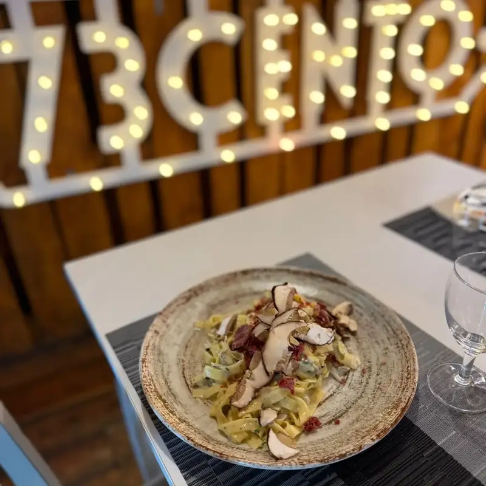
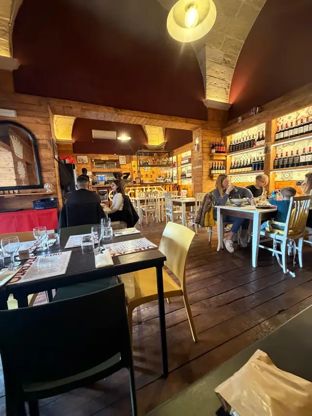
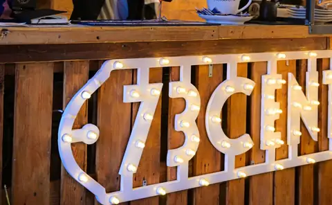
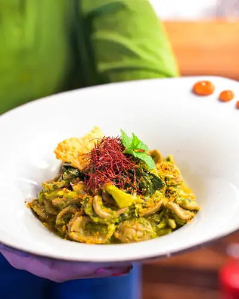
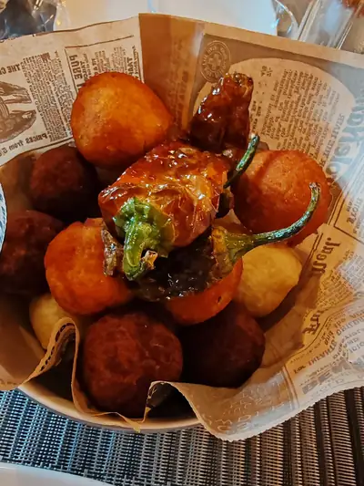
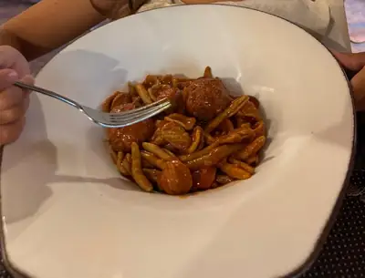
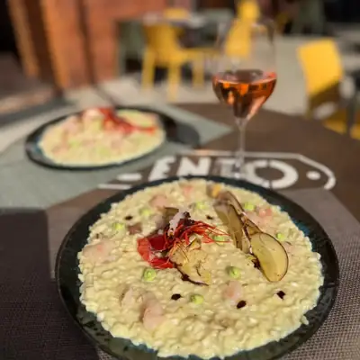

Menù Bistrò
12:00 – 18:00
Il pranzo di chi lavora in città e di chi visita Lecce: un primo della tradizione, un panino con i pezzetti, un calice al bancone. Veloce, senza rinunciare al sugo della domenica.
Bistrò & Ristorante · Via Taranto 37
Due formule, una sola cucina: il bistrò di giorno, il ristorante la sera. Orecchiette, pezzetti al sugo, frittu de Santu Ronzu e vino del Salento, a pochi passi dal centro barocco.
4,6634 recensioni su Google
Sempre aperti
12:00 – 18:00
Il pranzo di chi lavora in città e di chi visita Lecce: un primo della tradizione, un panino con i pezzetti, un calice al bancone. Veloce, senza rinunciare al sugo della domenica.
18:00 – 24:00
La cena con calma, sotto le volte in pietra: antipasto della casa, pignata di carne, polpo, una bottiglia di vino salentino. Per una coppia, una famiglia o la tavolata degli amici.


Chi siamo
73Cento è in Via Taranto, a due passi da Porta Napoli e dal centro barocco. Dentro trovi le volte in pietra leccese, il bancone in legno, gli scaffali di vino e l'insegna con le lampadine. Il nome? Viene da 73100, il codice postale di Lecce.
In cucina la tradizione salentina, fatta come a casa: il ragù che sobbolle per ore, la pignata, le verdure di stagione, il fritto della festa. In carta vini del territorio e una buona scelta di birre; d'estate si mangia anche fuori.
La cucina
I piatti più chiesti dai nostri clienti, quelli che finiscono nelle recensioni.




Mercoledì 11 novembre
A San Martino ogni mosto diventa vino.
30 € a persona
acqua e vino novello inclusi
Dicono di noi
«Pezzetti di carne al sugo e focaccia di patate eccezionali.»
«Orecchiette, parmigiana e lasagna di gran gusto e qualità.»
«73cento non è solo un bistrò, 73cento è casa!»
Orari
Dove siamo
A tre minuti a piedi da Porta Napoli, a un quarto d'ora da Piazza Sant'Oronzo.